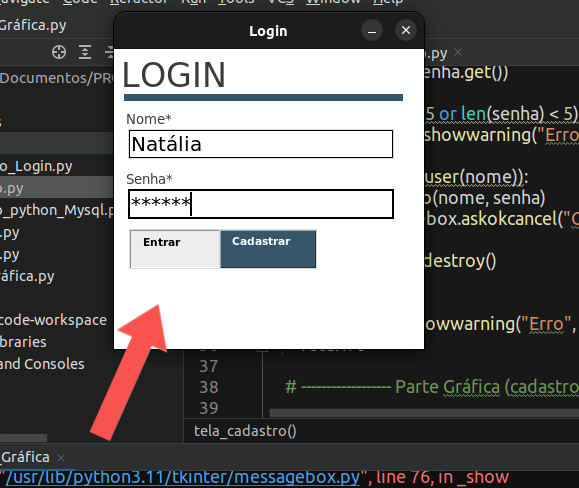
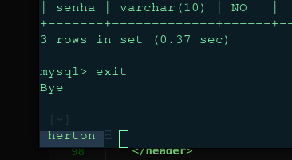

Sistema Login em
Python
, com uma interface gráfica
e conexão ao banco de dados
MySQL.
É importante salientar que iriei abordar de forma superficial o que foi feito durante todo processo, caso queira saber mais entre no link ao final do post para ver todos os documentos no meu GitHub. Apartir do aprendizado da liguagem de programação SQL, linguagem utilizada pelo MySQL que é um banco de dados open source e gratuito, eu pretendia de alguma forma pôr em prática o que foi aprendido na teoria. De forma análoga, já havia aprendido C no primeiro semestre da faculdade e posto em prática criando um simples sistema de login e cadastro (como os que redes sociais usam) que possibilitou a lógica de base para esse simples projeto em Python.
Iniciando
O desafio inicial era colocar os dados do input(entrada de informações), como senha e nome em um lugar mais apropriado, pois em C eu havia utilizado um arquivo em formato binário (como os arquivos em texto, porém com uma linguagem mais apropriada para a máquina ler), o que não é muito utilizado, em comparação com os grandes bancos de dados. E é aí que entra o MySQL.

Criando os banco de dados
Com o MySQL instalado optei por utilizar o próprio terminal para fazer as modificações, como criar um usuário, um root, uma senha, um database e por fim uma tabela, é nessas belezas que pode ser armazenado as informações do input com os comandos de CREATE.

Lógica do login e interface gráfica
Basicamente o Login funciona com uma autenticação por meio do nome do user e uma senha de no mínimo 5 dígitos. Ao ler as informações na tela a máquina se conecta com o database e informa os comandos da linguagem SQL que devem ser executados por meio da linguagem Python (mesma usada na criação do código fonte do login e cadastro), como por exemplo o comando SELECT que talvez seja um dos mais importantes dessa linguagem. O SELECT e seus derivados realizam consultas (chamadas de query) de dados na base de dados.
Como o foco era pôr em prática o aprendizado em bancos de dados optei por uma interface simples e intuitiva, usando a biblioteca do Python Tkinter para criá-la. Além do mais, aqui não uso nenhum algoritmo de criptografia para guardar, futuramente pretendo estudar mais segurança de dados e etc, e assim modificar esse código.
.png)
.png)
.png)


Conclusão
Ao fim, o programa é capaz de cadastrar uma quantidade ilimitada de pessoas em um banco de dados, checar o correto nome e senha de cada, permitindo assim a entrada do usuário. Caso algo visto acima tenha algum erro ou possa ser melhorado de alguma forma, peço que você que está lendo entre em contato e me avise, a idéia aqui é evoluir cada vez mais.
Documentos no GitHub aqui!
